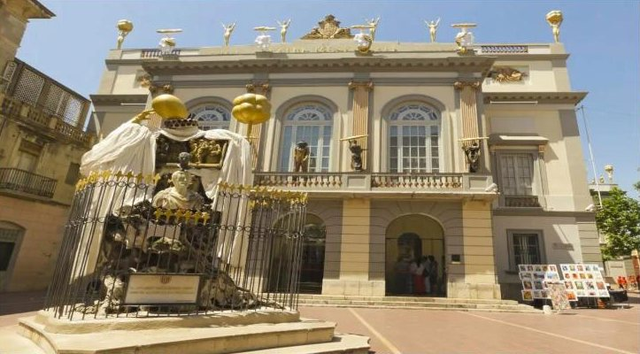
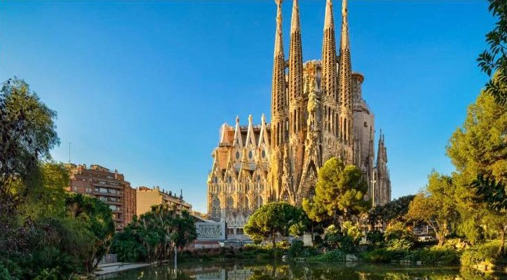
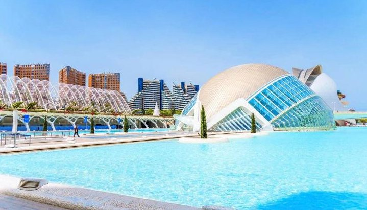
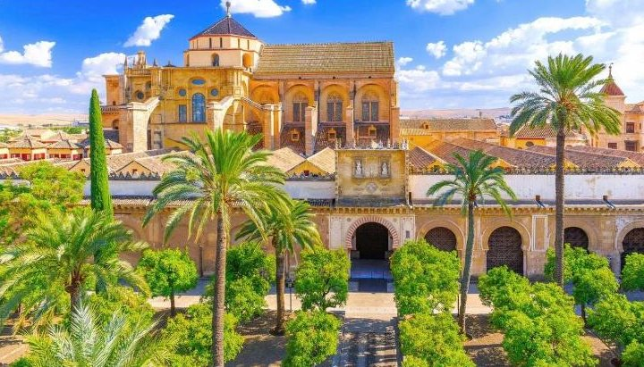
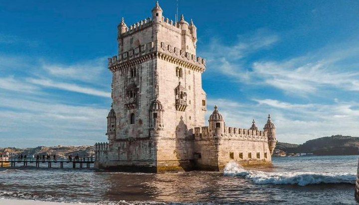
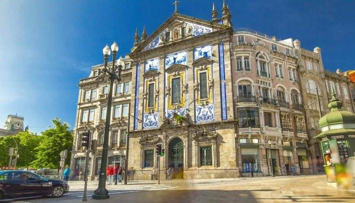
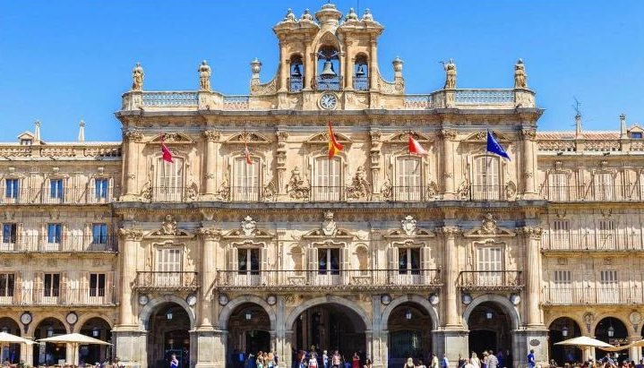
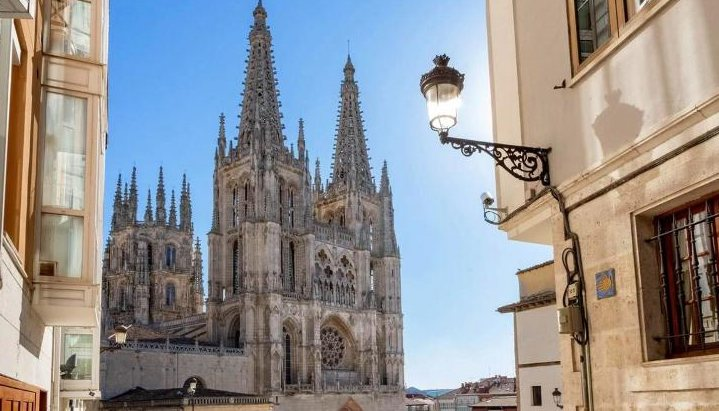
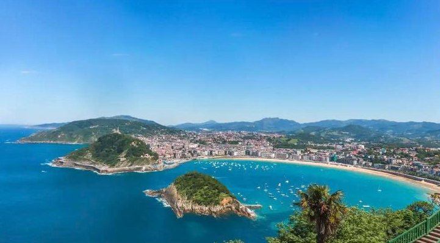

dzień1
Wyjazd z Polski
📍 Katowice → Niemcy → Francja
Zbiórka i wyjazd autokarem. Jazda przez noc, z postojami.

Autokarem z Katowic: Hiszpania, Portugalia, Fatima i Lourdes
Dotknij mapy, żeby ją powiększyć.
Kolejność zwiedzania może się nieco zmienić — o szczegółach decyduje pilot na miejscu.
📍 Katowice → Niemcy → Francja
Zbiórka i wyjazd autokarem. Jazda przez noc, z postojami.

📍 Figueres → Costa Brava
Przyjazd do Hiszpanii. Krótka wizyta w muzeum słynnego malarza Salvadora Dalego w jego rodzinnym Figueres. Nocleg nad morzem na Costa Brava.

📍 Barcelona
Dzielnica portowa, deptak La Rambla z halą targową La Boqueria, Dzielnica Gotycka z katedrą i przejście pod Sagrada Família. W czasie wolnym kamienice Gaudíego przy Passeig de Gràcia.

📍 Walencja → okolice Granady
Starówka Walencji: katedra, wielki targ, dawna Giełda Jedwabiu i futurystyczne Miasteczko Sztuki i Nauki. Potem malownicza trasa z widokiem na najwyższe góry Hiszpanii.

📍 Granada · Kordoba
Rano Alhambra w Granadzie, wspaniały pałac arabskich władców, i ogrody Generalife. Po południu Kordoba i Mezquita — dawny meczet, w którym zbudowano katedrę.

📍 Sewilla
Uliczki dzielnicy Santa Cruz, gotycka katedra (albo Kościół Zbawiciela), pałac Dom Piłata z ogrodami, Plac Hiszpański i Plac Ameryki.

📍 Cabo da Roca · Lizbona · Fatima
Cabo da Roca — najdalej na zachód wysunięty punkt Europy. Lizbona: dzielnica Belém (wieża, Pomnik Odkrywców, klasztor Hieronimitów), kościół św. Dominika i centrum miasta. Wieczorem przyjazd do Fatimy.

📍 Fatima
Dzień w Fatimie: msza w sanktuarium albo odpoczynek. Wieczorem różaniec i procesja ze świecami.

📍 Porto → okolice Salamanki
Bardzo wczesny wyjazd, śniadanie na wynos. Porto: wąskie uliczki starego miasta, katedra z widokiem na rzekę Duero i dworzec wyłożony niebieskimi kafelkami. Czas wolny w centrum.

📍 Salamanka · Ávila · Madryt
Salamanka ze złotego piaskowca i jej słynny rynek Plaza Mayor, uniwersytet i katedry. Ávila otoczona średniowiecznymi murami. Wieczorem Madryt: Plaza Mayor, Plac Hiszpański, pałac królewski, muzeum Prado albo park Retiro.

📍 El Escorial · Burgos
Eskurial — ogromny pałac i klasztor hiszpańskich królów, z ich grobowcami. Potem Burgos i jedna z najpiękniejszych gotyckich katedr w Hiszpanii.

📍 San Sebastián (Hiszpania) → Lourdes (Francja)
San Sebastián nad zatoką La Concha: starówka, most nad rzeką i czas na baskijskie przekąski. Potem przejazd do Lourdes. Wieczorem procesja ze świecami.

📍 Lourdes → Polska
Krótki spacer po Lourdes i przed południem wyjazd w drogę powrotną.
🚌 jazda przez noc
📍 Katowice
Powrót do miasta, w którym się wsiadało.
Wyjazd autokarem z Katowic w sobotę, powrót w piątek po 14 dniach. Cena jest za jedną osobę, gdy w pokoju są 2 osoby, i zawiera już dopłatę za wyjazd z Katowic. Biuro dolicza jeszcze 20 zł na fundusze gwarancyjne.
| Cena wycieczki (najtańszy termin) | 5 348 zł |
| Fundusze gwarancyjne (TFG i TFP) | 20 zł |
| Opłata na miejscu: bilety, przewodnicy, słuchawki | 270 € ≈ 1 148 zł |
| Taksa klimatyczna w Katalonii i Francji | 10 € ≈ 42 zł |
Euro przeliczone orientacyjnie po ok. 4,25 zł. Bez wycieczki dla chętnych do Batalhi i Nazaré (ok. 48–58 €). Dla 2 osób: ok. 13 100 zł.